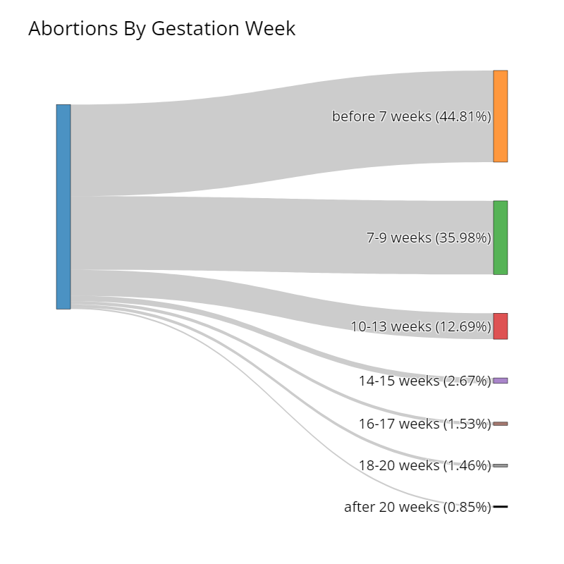

Vote Yes On 4!
✔
A Right to
Healthcare, Privacy, Dignity
An Abortion
The Florida general election is Nov. 5, 2024.
Deadline to register is October 7, 2024
✅Amendment 4
No law shall prohibit, penalize, delay, or restrict abortion
- before viability
- when necessary to protect the patient’s health, as determined by the patient’s healthcare provider.
This amendment does not change the Legislature’s constitutional authority to require notification to a parent or guardian before a minor has an abortion.
❌Florida's Active 6 Week Abortion Ban
A physician cannot perform or induce an abortion if the fetus is older than 6 weeks unless specific conditions are met.
- certification by two physicians that the procedure is necessary to save the woman’s life or prevent serious physical harm
- certification that the abortion is needed due to an emergency and no other physician is available
- confirmation of a fatal fetal abnormality if the pregnancy is not in the third trimester
- if the pregnancy results from rape, incest, or human trafficking and is under 15 weeks gestational age
Documentation such as police reports or medical records is required, and in cases of rape, incest, or human trafficking, the physician must report the situation appropriately. Only a physician can perform or induce an abortion; telehealth or remote methods are not allowed for this procedure. Consent must be obtained voluntarily and informed, with the physician providing detailed information and a mandatory 24-hour waiting period. In emergencies where the consent requirements cannot be met, a physician may proceed with documentation of medical necessity. The procedure must follow high standards of care, particularly in the third trimester, and partial-birth abortions are prohibited except to save the mother's life. Public funds cannot be used for organizations performing abortions unless they meet specific criteria, such as abortions only for rape, incest, or medical necessity.
Source: The 2024 Florida Statutes
What do Obstetricians and Gynecologists think?
"Induced abortion is an essential component of women’s health care. Like all medical matters, decisions regarding abortion should be made by patients in consultation with their health care providers and without undue interference by outside parties. Like all patients, women obtaining abortion are entitled to privacy, dignity, respect, and support."
Source: The American College of Obstetricians and Gynecologists (ACOG)
The Myth of "Post-Birth" Abortions
Killing an infant after birth is infanticide and is illegal in all 50 states. Situations resulting in a fetal death in the third trimester are exceedingly rare, and involve emergencies such as fetal anomalies or life-threatening medical emergencies affecting the mother.
Fetal Anomalies
"About 120,000 pregnancies in the United States each year are affected by fetal anomalies, which are genetic or physical defects of varying severity that can impact pregnancy, delivery and the child’s health, according to the Centers for Disease Control and Prevention." Meanwhile, a quarter of pregnant people don't start receiving prenatal care until after 12 weeks. This means many fetal anomalies will not be detected until it is illegal to get an abortion. Forced pregnancy for a dying fetus is immoral. Abortion bans require a woman to carry fetal anomalies to birth, or until the woman's life is in imminent danger.
Source: National Library of Medicine: Trends in Timing of Pregnancy Awareness Among US Women
When is a pregnancy viable?
23 weeks is considered a viable pregnancy
How far along are abortions performed?
93.48% of abortions are performed during the first 13 weeks. More than 99% of abortions occur before the third trimester. Third trimester abortions are exceedingly rare.

Source: CDC — Abortion Surveillance — United States, 2021
Abortions later in pregnancy
"Abortions at or after 21 weeks are uncommon and represent less than 1% of all abortions in the U.S. The procedures are expensive and often require travel and lost wages. They normally require treatment over multiple days and are only performed by a subset of all abortion providers." Healthcare providers are bound by strict ethical boundaries and will only perform these abortions if necessary. Abortions at this time fall into the following categories:
- Late detection of fetal anomaly. Either the fetus will be a stillborn, or would survive for only a short time
- Increasing incidence of maternal health complications with advanced gestation
- Barriers to obtaining an abortion earlier (financial, abortion laws, finding medical facilities, unknown pregnancy)
Source: Who Seeks Abortions at or After 20 Weeks?
Religious Beliefs
More than a half-dozen major religions and denominations support abortion rights with few or some limits — Conservative and Reform Judaism, the Presbyterian Church (U.S.A.), the Unitarian Universalist Church and the United Church of Christ. Relgion can play a role in a woman's journey through pregnancy. However, this is a choice that must be held between the person carrying a fetus, their doctor, and God.
Source: NBC NewsDoes life begin at 6 weeks?
No, life does not begin at 6 weeks. It is not medical, religious, or societal consensus that life begins before birth. At 6 weeks gestation, the cells developing in the uterus are called an embryo.
In case you are curious, here is an image of a embryo at 6 weeks next to a green pea.
Access to Abortion Saves Lives
In regions where unsafe abortions are common, the death rates are high, at 200 deaths per 100,000 abortions. Access to abortion saves lives. With access to safe abortion care, mortality rates are 1 death per 100,000 abortions.
Source: World Health Organization
The Health Risks of Pregnancy
Maternal Mortality:
The maternal mortality rate for 2021 was 32.9 deaths per 100,000 live births. To carry a pregnancy to
term is a risk that not everyone is willing to take.
Postpartum Physical Health:
After pregnancy, the health-issues are not over. It will take up to 6 weeks to recover from Postpartum
bleeding, vaginal pain, incontinence and cramping.
Mental Health:
The health risks are not only physical; many people experience changes in mental health during
pregnancy. "Up to 20% of women suffer from mood or anxiety disorders during pregnancy."
Postpartum Mental Health:
Furthermore, during the postpartum period, "85% of women experience some type of mood disturbance. For
most the
symptoms are
mild and short-lived; however, 10 to 15% of women develop more significant symptoms of depression or
anxiety."
Source: CDC - National Center for Health Statistics
Source: MGH Center for Women's Mental Health
The Economic Impact of Pregnancy
Pregnancy is expensive. "Health costs associated with pregnancy, childbirth, and post-partum care average a total of $18,865 and the average out-of-pocket payments total $2,854." Additionally, during pregnancy women experience pain, discomfort, severe fatigue, depression, and limited physical capabilities. These symptoms are a challenge to maintaining pre-pregnancy working hours and income.
Source: KFF- Health Costs Associated with Pregnancy, Childbirth, and Postpartum Care